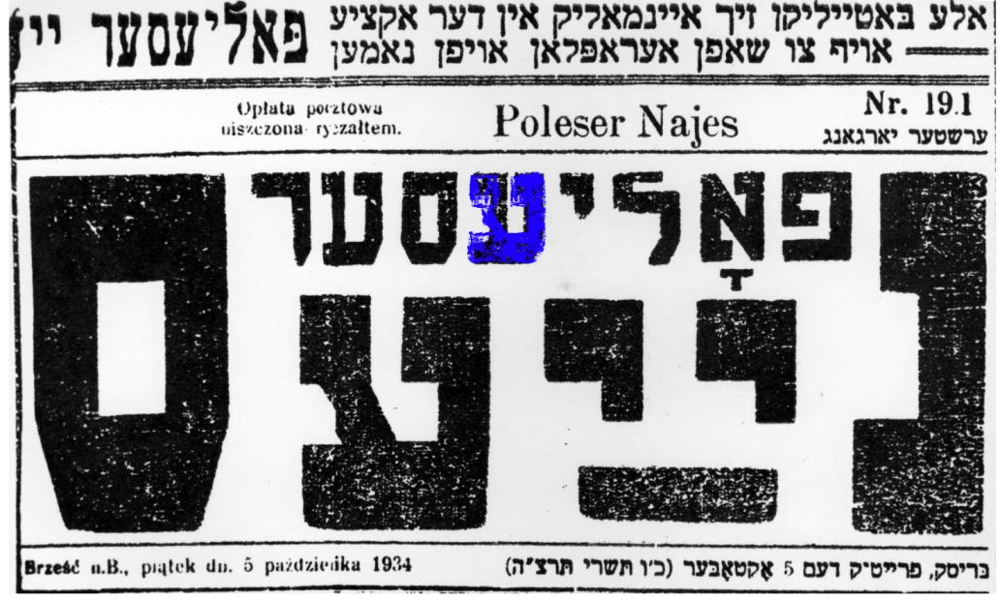
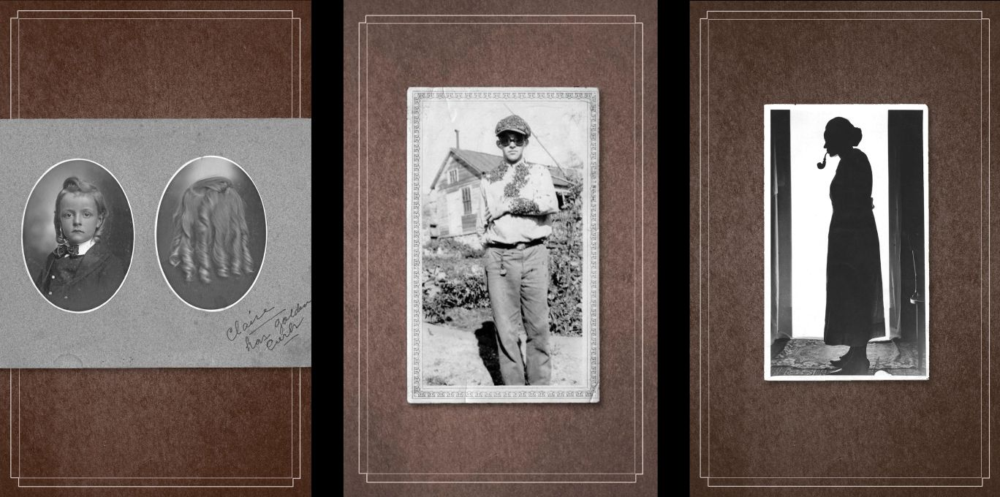
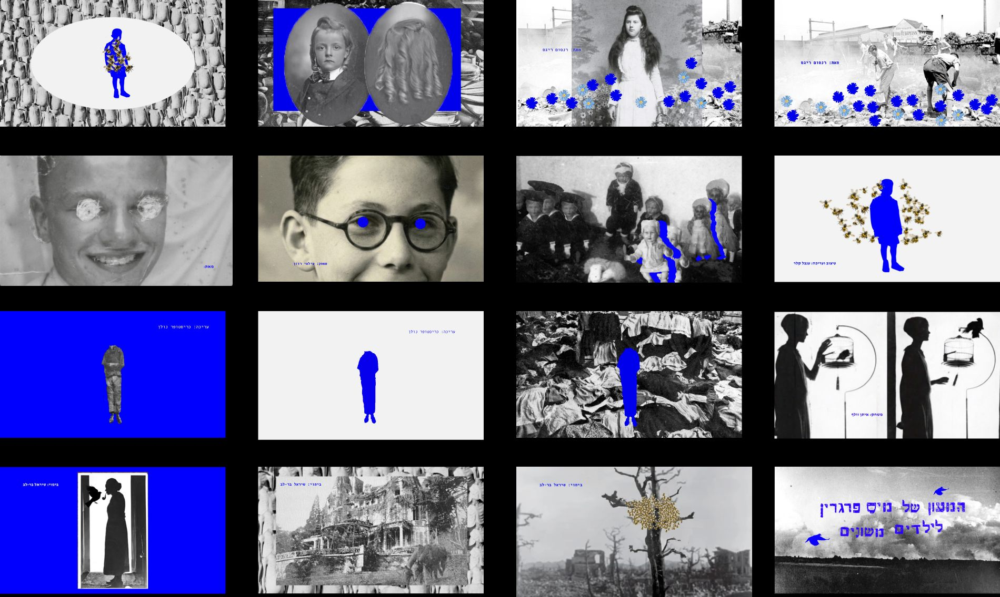

Typography
The lettering is taken from a
poster from the ghetto, from the
Yad Vashem website.

Sound
“Rivolta” by Polo & Pan
Images
Taken from the book itself, which was written around a
postcard collection the author owns, plus Yad Vashem & AI.

Storyboard
